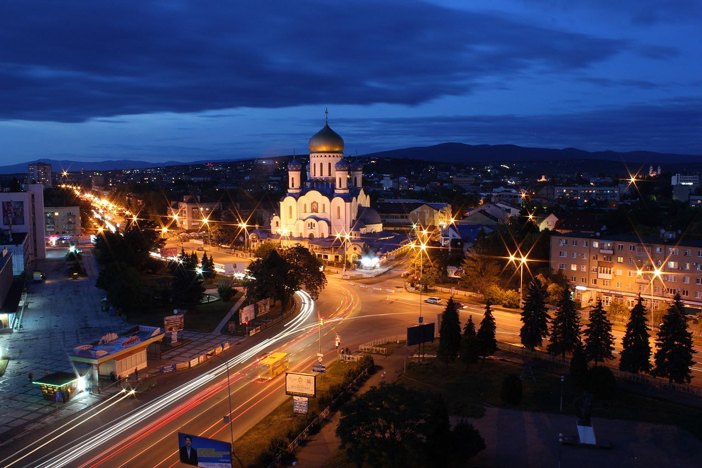

Uzhhorod

У́жгород— місто на річці Уж в Закарпатській області України, центр Ужгородської міської громади та Ужгородського району. Розташоване за 811 км від Києва, на кордоні зі Словаччиною.
Місто біля підніжжя Карпат є найменшим обласним центром країни, проте має багату й давню історію. Засноване у IX столітті. Воно опинилося під владою Угорщини, а пізніше — Австро-Угорщини. Було довгий час фортецею роду Другетів. Ужгород розвивався як промисловий та культурний центр Закарпаття. У 1919 році був столицею Підкарпатської Русі у складі Чехословаччини, 1945-го перейшов до УРСР, з 1991-го — в складі незалежної України.